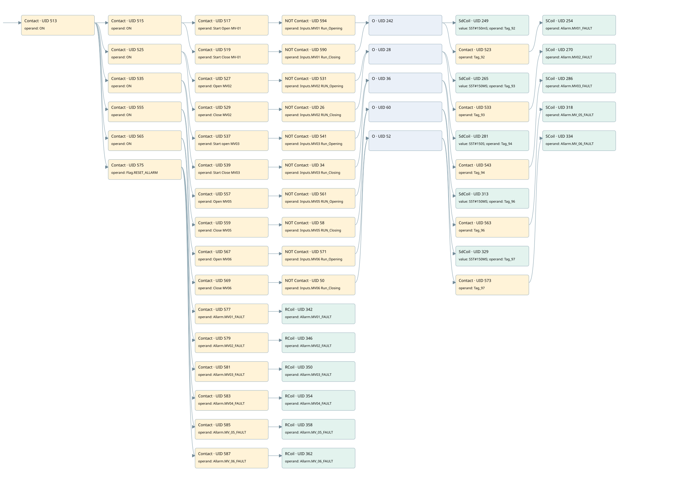

mv-01 motorized valve fault
allarms 2 · 검색 색인 순서 1 · 원본 내부 NID 추정 1
백업 PLF 원본의 2651927 바이트 위치에서 복원한 XML. 검색 문서 1226의 객체 키 16102200ec0f000000000000와 연결했다. 이름 해석 59/59개. 남은 RefId는 상수 또는 미해석 참조다.
연결 구조 다시 그리기
원본 Part/PCon/Wire를 이용한 연결도다. TIA 화면의 래더 배치 또는 실행 결과를 재현한 그림은 아니다. 핀 연결은 아래 표와 원본 XML을 기준으로 읽는다. 노드 위에 마우스를 두면 피연산자 이름을 볼 수 있다.

접점·코일·블록과 피연산자
| Part UID | Gate | Negated 핀 | 연결 피연산자 |
|---|---|---|---|
| 513 | Contact | operand = ON | |
| 515 | Contact | operand = ON | |
| 517 | Contact | operand = Start Open MV-01 | |
| 594 | Contact | operand | operand = Inputs.MV01 Run_Opening |
| 519 | Contact | operand = Start Close MV-01 | |
| 590 | Contact | operand | operand = Inputs.MV01 Run_Closing |
| 242 | O | ||
| 249 | SdCoil | value = S5T#150mS; operand = Tag_92 | |
| 523 | Contact | operand = Tag_92 | |
| 254 | SCoil | operand = Allarm.MV01_FAULT | |
| 525 | Contact | operand = ON | |
| 527 | Contact | operand = Open MV02 | |
| 531 | Contact | operand | operand = Inputs.MV02 RUN_Opening |
| 529 | Contact | operand = Close MV02 | |
| 26 | Contact | operand | operand = Inputs.MV02 RUN_Closing |
| 28 | O | ||
| 265 | SdCoil | value = S5T#150MS; operand = Tag_93 | |
| 533 | Contact | operand = Tag_93 | |
| 270 | SCoil | operand = Allarm.MV02_FAULT | |
| 535 | Contact | operand = ON | |
| 537 | Contact | operand = Start open MV03 | |
| 541 | Contact | operand | operand = Inputs.MV03 Run_Opening |
| 539 | Contact | operand = Start Close MV03 | |
| 34 | Contact | operand | operand = Inputs.MV03 Run_Closing |
| 36 | O | ||
| 281 | SdCoil | value = S5T#150S; operand = Tag_94 | |
| 543 | Contact | operand = Tag_94 | |
| 286 | SCoil | operand = Allarm.MV03_FAULT | |
| 555 | Contact | operand = ON | |
| 557 | Contact | operand = Open MV05 | |
| 561 | Contact | operand | operand = Inputs.MV05 RUN_Opening |
| 559 | Contact | operand = Close MV05 | |
| 58 | Contact | operand | operand = Inputs.MV05 RUN_Closing |
| 60 | O | ||
| 313 | SdCoil | value = S5T#150MS; operand = Tag_96 | |
| 563 | Contact | operand = Tag_96 | |
| 318 | SCoil | operand = Allarm.MV_05_FAULT | |
| 565 | Contact | operand = ON | |
| 567 | Contact | operand = Open MV06 | |
| 571 | Contact | operand | operand = Inputs.MV06 Run_Opening |
| 569 | Contact | operand = Close MV06 | |
| 50 | Contact | operand | operand = Inputs.MV06 Run_Closing |
| 52 | O | ||
| 329 | SdCoil | value = S5T#150MS; operand = Tag_97 | |
| 573 | Contact | operand = Tag_97 | |
| 334 | SCoil | operand = Allarm.MV_06_FAULT | |
| 575 | Contact | operand = Flag.RESET_ALLARM | |
| 577 | Contact | operand = Allarm.MV01_FAULT | |
| 342 | RCoil | operand = Allarm.MV01_FAULT | |
| 579 | Contact | operand = Allarm.MV02_FAULT | |
| 346 | RCoil | operand = Allarm.MV02_FAULT | |
| 581 | Contact | operand = Allarm.MV03_FAULT | |
| 350 | RCoil | operand = Allarm.MV03_FAULT | |
| 583 | Contact | operand = Allarm.MV04_FAULT | |
| 354 | RCoil | operand = Allarm.MV04_FAULT | |
| 585 | Contact | operand = Allarm.MV_05_FAULT | |
| 358 | RCoil | operand = Allarm.MV_05_FAULT | |
| 587 | Contact | operand = Allarm.MV_06_FAULT | |
| 362 | RCoil | operand = Allarm.MV_06_FAULT |
접점 경로를 펼친 조건식
Contact·O/A·비교기의 원본 연결을 읽기 쉽게 펼친 보조 해석이다. POWER는 전원 레일 시작을 뜻한다. 호출 블록·에지·타이머의 내부 동작과 다중 쓰기 순서는 이 표로 실행 검증하지 않았다. 미해석 핀과 RefId는 원문 연결표에서 확인한다.
| UID | 동작 | 대상 | 원본 접점 경로 | 내용 |
|---|---|---|---|---|
| 249 | SdCoil | Tag_92 | (((ON AND Start Open MV-01) AND NOT [Inputs.MV01 Run_Opening]) OR ((ON AND Start Close MV-01) AND NOT [Inputs.MV01 Run_Closing])) | 시간 동작 SdCoil; 타이머 의미 추가 확인 / 시간 인자 S5T#150mS |
| 254 | SCoil | Allarm.MV01_FAULT | ((((ON AND Start Open MV-01) AND NOT [Inputs.MV01 Run_Opening]) OR ((ON AND Start Close MV-01) AND NOT [Inputs.MV01 Run_Closing])) AND Tag_92) | 조건 성립 시 Set |
| 265 | SdCoil | Tag_93 | (((ON AND Open MV02) AND NOT [Inputs.MV02 RUN_Opening]) OR ((ON AND Close MV02) AND NOT [Inputs.MV02 RUN_Closing])) | 시간 동작 SdCoil; 타이머 의미 추가 확인 / 시간 인자 S5T#150MS |
| 270 | SCoil | Allarm.MV02_FAULT | ((((ON AND Open MV02) AND NOT [Inputs.MV02 RUN_Opening]) OR ((ON AND Close MV02) AND NOT [Inputs.MV02 RUN_Closing])) AND Tag_93) | 조건 성립 시 Set |
| 281 | SdCoil | Tag_94 | (((ON AND Start open MV03) AND NOT [Inputs.MV03 Run_Opening]) OR ((ON AND Start Close MV03) AND NOT [Inputs.MV03 Run_Closing])) | 시간 동작 SdCoil; 타이머 의미 추가 확인 / 시간 인자 S5T#150S |
| 286 | SCoil | Allarm.MV03_FAULT | ((((ON AND Start open MV03) AND NOT [Inputs.MV03 Run_Opening]) OR ((ON AND Start Close MV03) AND NOT [Inputs.MV03 Run_Closing])) AND Tag_94) | 조건 성립 시 Set |
| 313 | SdCoil | Tag_96 | (((ON AND Open MV05) AND NOT [Inputs.MV05 RUN_Opening]) OR ((ON AND Close MV05) AND NOT [Inputs.MV05 RUN_Closing])) | 시간 동작 SdCoil; 타이머 의미 추가 확인 / 시간 인자 S5T#150MS |
| 318 | SCoil | Allarm.MV_05_FAULT | ((((ON AND Open MV05) AND NOT [Inputs.MV05 RUN_Opening]) OR ((ON AND Close MV05) AND NOT [Inputs.MV05 RUN_Closing])) AND Tag_96) | 조건 성립 시 Set |
| 329 | SdCoil | Tag_97 | (((ON AND Open MV06) AND NOT [Inputs.MV06 Run_Opening]) OR ((ON AND Close MV06) AND NOT [Inputs.MV06 Run_Closing])) | 시간 동작 SdCoil; 타이머 의미 추가 확인 / 시간 인자 S5T#150MS |
| 334 | SCoil | Allarm.MV_06_FAULT | ((((ON AND Open MV06) AND NOT [Inputs.MV06 Run_Opening]) OR ((ON AND Close MV06) AND NOT [Inputs.MV06 Run_Closing])) AND Tag_97) | 조건 성립 시 Set |
| 342 | RCoil | Allarm.MV01_FAULT | ((ON AND Flag.RESET_ALLARM) AND Allarm.MV01_FAULT) | 조건 성립 시 Reset |
| 346 | RCoil | Allarm.MV02_FAULT | ((ON AND Flag.RESET_ALLARM) AND Allarm.MV02_FAULT) | 조건 성립 시 Reset |
| 350 | RCoil | Allarm.MV03_FAULT | ((ON AND Flag.RESET_ALLARM) AND Allarm.MV03_FAULT) | 조건 성립 시 Reset |
| 354 | RCoil | Allarm.MV04_FAULT | ((ON AND Flag.RESET_ALLARM) AND Allarm.MV04_FAULT) | 조건 성립 시 Reset |
| 358 | RCoil | Allarm.MV_05_FAULT | ((ON AND Flag.RESET_ALLARM) AND Allarm.MV_05_FAULT) | 조건 성립 시 Reset |
| 362 | RCoil | Allarm.MV_06_FAULT | ((ON AND Flag.RESET_ALLARM) AND Allarm.MV_06_FAULT) | 조건 성립 시 Reset |
원본 배선 연결
| Wire UID | 동일 Wire 연결 끝점 |
|---|---|
| 589 | Powerrail {} ↔ Part 513.in |
| 425 | ORef 363 (ON) ↔ Part 513.operand |
| 514 | Part 513.out ↔ Part 515.in ↔ Part 525.in ↔ Part 535.in ↔ Part 555.in ↔ Part 565.in ↔ Part 575.in |
| 426 | ORef 364 (ON) ↔ Part 515.operand |
| 516 | Part 515.out ↔ Part 517.in ↔ Part 519.in |
| 427 | ORef 365 (Start Open MV-01) ↔ Part 517.operand |
| 518 | Part 517.out ↔ Part 594.in |
| 597 | ORef 595 (Inputs.MV01 Run_Opening) ↔ Part 594.operand |
| 22 | Part 594.out ↔ Part 242.in1 |
| 428 | ORef 366 (Start Close MV-01) ↔ Part 519.operand |
| 520 | Part 519.out ↔ Part 590.in |
| 593 | ORef 591 (Inputs.MV01 Run_Closing) ↔ Part 590.operand |
| 21 | Part 590.out ↔ Part 242.in2 |
| 522 | Part 242.out ↔ Part 249.in ↔ Part 523.in |
| 431 | ORef 368 (S5T#150mS) ↔ Part 249.value |
| 432 | ORef 369 (Tag_92) ↔ Part 249.operand |
| 433 | ORef 370 (Tag_92) ↔ Part 523.operand |
| 524 | Part 523.out ↔ Part 254.in |
| 435 | ORef 371 (Allarm.MV01_FAULT) ↔ Part 254.operand |
| 437 | ORef 372 (ON) ↔ Part 525.operand |
| 526 | Part 525.out ↔ Part 527.in ↔ Part 529.in |
| 438 | ORef 373 (Open MV02) ↔ Part 527.operand |
| 23 | Part 527.out ↔ Part 531.in |
| 441 | ORef 375 (Inputs.MV02 RUN_Opening) ↔ Part 531.operand |
| 29 | Part 531.out ↔ Part 28.in1 |
| 439 | ORef 374 (Close MV02) ↔ Part 529.operand |
| 24 | Part 529.out ↔ Part 26.in |
| 25 | ORef 27 (Inputs.MV02 RUN_Closing) ↔ Part 26.operand |
| 30 | Part 26.out ↔ Part 28.in2 |
| 532 | Part 28.out ↔ Part 265.in ↔ Part 533.in |
| 442 | ORef 376 (S5T#150MS) ↔ Part 265.value |
| 443 | ORef 377 (Tag_93) ↔ Part 265.operand |
| 444 | ORef 378 (Tag_93) ↔ Part 533.operand |
| 534 | Part 533.out ↔ Part 270.in |
| 446 | ORef 379 (Allarm.MV02_FAULT) ↔ Part 270.operand |
| 448 | ORef 380 (ON) ↔ Part 535.operand |
| 536 | Part 535.out ↔ Part 537.in ↔ Part 539.in |
| 449 | ORef 381 (Start open MV03) ↔ Part 537.operand |
| 31 | Part 537.out ↔ Part 541.in |
| 452 | ORef 383 (Inputs.MV03 Run_Opening) ↔ Part 541.operand |
| 37 | Part 541.out ↔ Part 36.in1 |
| 450 | ORef 382 (Start Close MV03) ↔ Part 539.operand |
| 32 | Part 539.out ↔ Part 34.in |
| 33 | ORef 35 (Inputs.MV03 Run_Closing) ↔ Part 34.operand |
| 38 | Part 34.out ↔ Part 36.in2 |
| 542 | Part 36.out ↔ Part 281.in ↔ Part 543.in |
| 453 | ORef 384 (S5T#150S) ↔ Part 281.value |
| 454 | ORef 385 (Tag_94) ↔ Part 281.operand |
| 455 | ORef 386 (Tag_94) ↔ Part 543.operand |
| 544 | Part 543.out ↔ Part 286.in |
| 457 | ORef 387 (Allarm.MV03_FAULT) ↔ Part 286.operand |
| 470 | ORef 396 (ON) ↔ Part 555.operand |
| 556 | Part 555.out ↔ Part 557.in ↔ Part 559.in |
| 471 | ORef 397 (Open MV05) ↔ Part 557.operand |
| 55 | Part 557.out ↔ Part 561.in |
| 474 | ORef 399 (Inputs.MV05 RUN_Opening) ↔ Part 561.operand |
| 61 | Part 561.out ↔ Part 60.in1 |
| 472 | ORef 398 (Close MV05) ↔ Part 559.operand |
| 56 | Part 559.out ↔ Part 58.in |
| 57 | ORef 59 (Inputs.MV05 RUN_Closing) ↔ Part 58.operand |
| 62 | Part 58.out ↔ Part 60.in2 |
| 562 | Part 60.out ↔ Part 313.in ↔ Part 563.in |
| 475 | ORef 400 (S5T#150MS) ↔ Part 313.value |
| 476 | ORef 401 (Tag_96) ↔ Part 313.operand |
| 477 | ORef 402 (Tag_96) ↔ Part 563.operand |
| 564 | Part 563.out ↔ Part 318.in |
| 479 | ORef 403 (Allarm.MV_05_FAULT) ↔ Part 318.operand |
| 481 | ORef 404 (ON) ↔ Part 565.operand |
| 566 | Part 565.out ↔ Part 567.in ↔ Part 569.in |
| 482 | ORef 405 (Open MV06) ↔ Part 567.operand |
| 47 | Part 567.out ↔ Part 571.in |
| 485 | ORef 407 (Inputs.MV06 Run_Opening) ↔ Part 571.operand |
| 53 | Part 571.out ↔ Part 52.in1 |
| 483 | ORef 406 (Close MV06) ↔ Part 569.operand |
| 48 | Part 569.out ↔ Part 50.in |
| 49 | ORef 51 (Inputs.MV06 Run_Closing) ↔ Part 50.operand |
| 54 | Part 50.out ↔ Part 52.in2 |
| 572 | Part 52.out ↔ Part 329.in ↔ Part 573.in |
| 486 | ORef 408 (S5T#150MS) ↔ Part 329.value |
| 487 | ORef 409 (Tag_97) ↔ Part 329.operand |
| 488 | ORef 410 (Tag_97) ↔ Part 573.operand |
| 574 | Part 573.out ↔ Part 334.in |
| 490 | ORef 411 (Allarm.MV_06_FAULT) ↔ Part 334.operand |
| 492 | ORef 412 (Flag.RESET_ALLARM) ↔ Part 575.operand |
| 576 | Part 575.out ↔ Part 577.in ↔ Part 579.in ↔ Part 581.in ↔ Part 583.in ↔ Part 585.in ↔ Part 587.in |
| 493 | ORef 413 (Allarm.MV01_FAULT) ↔ Part 577.operand |
| 578 | Part 577.out ↔ Part 342.in |
| 495 | ORef 414 (Allarm.MV01_FAULT) ↔ Part 342.operand |
| 496 | ORef 415 (Allarm.MV02_FAULT) ↔ Part 579.operand |
| 580 | Part 579.out ↔ Part 346.in |
| 498 | ORef 416 (Allarm.MV02_FAULT) ↔ Part 346.operand |
| 499 | ORef 417 (Allarm.MV03_FAULT) ↔ Part 581.operand |
| 582 | Part 581.out ↔ Part 350.in |
| 501 | ORef 418 (Allarm.MV03_FAULT) ↔ Part 350.operand |
| 502 | ORef 419 (Allarm.MV04_FAULT) ↔ Part 583.operand |
| 584 | Part 583.out ↔ Part 354.in |
| 504 | ORef 420 (Allarm.MV04_FAULT) ↔ Part 354.operand |
| 505 | ORef 421 (Allarm.MV_05_FAULT) ↔ Part 585.operand |
| 586 | Part 585.out ↔ Part 358.in |
| 507 | ORef 422 (Allarm.MV_05_FAULT) ↔ Part 358.operand |
| 508 | ORef 423 (Allarm.MV_06_FAULT) ↔ Part 587.operand |
| 588 | Part 587.out ↔ Part 362.in |
| 510 | ORef 424 (Allarm.MV_06_FAULT) ↔ Part 362.operand |
식별자 해석 근거 59개
| ORef UID | RefId | 이름 | IdentXmlPart 파일 | 해석 방법 |
|---|---|---|---|---|
| 363 | 1 | ON | 0570-IdentXmlPart.xml | UID/RID + search-text + NID agreement |
| 364 | 1 | ON | 0570-IdentXmlPart.xml | UID/RID + search-text + NID agreement |
| 365 | 3 | Start Open MV-01 | 0570-IdentXmlPart.xml | UID/RID + search-text + NID agreement |
| 595 | 59 | Inputs.MV01 Run_Opening | 0573-IdentXmlPart.xml | UID/RID + search-text + NID agreement |
| 366 | 4 | Start Close MV-01 | 0570-IdentXmlPart.xml | UID/RID + search-text + NID agreement |
| 591 | 60 | Inputs.MV01 Run_Closing | 0573-IdentXmlPart.xml | UID/RID + search-text + NID agreement |
| 369 | 9 | Tag_92 | 0570-IdentXmlPart.xml | UID/RID + search-text + NID agreement |
| 368 | 77 | S5T#150mS | 0571-IdentXmlPart.xml | literal candidate: UID/RID/NID + nearby named declarations + search-text agreement |
| 370 | 9 | Tag_92 | 0570-IdentXmlPart.xml | UID/RID + search-text + NID agreement |
| 371 | 11 | Allarm.MV01_FAULT | 0573-IdentXmlPart.xml | UID/RID + search-text + NID agreement |
| 372 | 1 | ON | 0570-IdentXmlPart.xml | UID/RID + search-text + NID agreement |
| 373 | 12 | Open MV02 | 0570-IdentXmlPart.xml | UID/RID + search-text + NID agreement |
| 375 | 61 | Inputs.MV02 RUN_Opening | 0573-IdentXmlPart.xml | UID/RID + search-text + NID agreement |
| 374 | 13 | Close MV02 | 0570-IdentXmlPart.xml | UID/RID + search-text + NID agreement |
| 27 | 62 | Inputs.MV02 RUN_Closing | 0573-IdentXmlPart.xml | UID/RID + search-text + NID agreement |
| 377 | 15 | Tag_93 | 0570-IdentXmlPart.xml | UID/RID + search-text + NID agreement |
| 376 | 8 | S5T#150MS | 0571-IdentXmlPart.xml | literal candidate: UID/RID/NID + nearby named declarations + search-text agreement |
| 378 | 15 | Tag_93 | 0570-IdentXmlPart.xml | UID/RID + search-text + NID agreement |
| 379 | 16 | Allarm.MV02_FAULT | 0573-IdentXmlPart.xml | UID/RID + search-text + NID agreement |
| 380 | 1 | ON | 0570-IdentXmlPart.xml | UID/RID + search-text + NID agreement |
| 381 | 17 | Start open MV03 | 0570-IdentXmlPart.xml | UID/RID + search-text + NID agreement |
| 383 | 63 | Inputs.MV03 Run_Opening | 0573-IdentXmlPart.xml | UID/RID + search-text + NID agreement |
| 382 | 18 | Start Close MV03 | 0570-IdentXmlPart.xml | UID/RID + search-text + NID agreement |
| 35 | 64 | Inputs.MV03 Run_Closing | 0573-IdentXmlPart.xml | UID/RID + search-text + NID agreement |
| 385 | 20 | Tag_94 | 0570-IdentXmlPart.xml | UID/RID + search-text + NID agreement |
| 384 | 83 | S5T#150S | 0571-IdentXmlPart.xml | literal candidate: UID/RID/NID + nearby named declarations + search-text agreement |
| 386 | 20 | Tag_94 | 0570-IdentXmlPart.xml | UID/RID + search-text + NID agreement |
| 387 | 21 | Allarm.MV03_FAULT | 0573-IdentXmlPart.xml | UID/RID + search-text + NID agreement |
| 396 | 1 | ON | 0570-IdentXmlPart.xml | UID/RID + search-text + NID agreement |
| 397 | 27 | Open MV05 | 0570-IdentXmlPart.xml | UID/RID + search-text + NID agreement |
| 399 | 67 | Inputs.MV05 RUN_Opening | 0573-IdentXmlPart.xml | UID/RID + search-text + NID agreement |
| 398 | 28 | Close MV05 | 0570-IdentXmlPart.xml | UID/RID + search-text + NID agreement |
| 59 | 68 | Inputs.MV05 RUN_Closing | 0573-IdentXmlPart.xml | UID/RID + search-text + NID agreement |
| 401 | 30 | Tag_96 | 0570-IdentXmlPart.xml | UID/RID + search-text + NID agreement |
| 400 | 8 | S5T#150MS | 0571-IdentXmlPart.xml | literal candidate: UID/RID/NID + nearby named declarations + search-text agreement |
| 402 | 30 | Tag_96 | 0570-IdentXmlPart.xml | UID/RID + search-text + NID agreement |
| 403 | 31 | Allarm.MV_05_FAULT | 0573-IdentXmlPart.xml | UID/RID + search-text + NID agreement |
| 404 | 1 | ON | 0570-IdentXmlPart.xml | UID/RID + search-text + NID agreement |
| 405 | 32 | Open MV06 | 0570-IdentXmlPart.xml | UID/RID + search-text + NID agreement |
| 407 | 69 | Inputs.MV06 Run_Opening | 0573-IdentXmlPart.xml | UID/RID + search-text + NID agreement |
| 406 | 33 | Close MV06 | 0570-IdentXmlPart.xml | UID/RID + search-text + NID agreement |
| 51 | 70 | Inputs.MV06 Run_Closing | 0573-IdentXmlPart.xml | UID/RID + search-text + NID agreement |
| 409 | 35 | Tag_97 | 0570-IdentXmlPart.xml | UID/RID + search-text + NID agreement |
| 408 | 8 | S5T#150MS | 0571-IdentXmlPart.xml | literal candidate: UID/RID/NID + nearby named declarations + search-text agreement |
| 410 | 35 | Tag_97 | 0570-IdentXmlPart.xml | UID/RID + search-text + NID agreement |
| 411 | 36 | Allarm.MV_06_FAULT | 0573-IdentXmlPart.xml | UID/RID + search-text + NID agreement |
| 412 | 38 | Flag.RESET_ALLARM | 0573-IdentXmlPart.xml | UID/RID + search-text + NID agreement |
| 413 | 11 | Allarm.MV01_FAULT | 0573-IdentXmlPart.xml | UID/RID + search-text + NID agreement |
| 414 | 11 | Allarm.MV01_FAULT | 0573-IdentXmlPart.xml | UID/RID + search-text + NID agreement |
| 415 | 16 | Allarm.MV02_FAULT | 0573-IdentXmlPart.xml | UID/RID + search-text + NID agreement |
| 416 | 16 | Allarm.MV02_FAULT | 0573-IdentXmlPart.xml | UID/RID + search-text + NID agreement |
| 417 | 21 | Allarm.MV03_FAULT | 0573-IdentXmlPart.xml | UID/RID + search-text + NID agreement |
| 418 | 21 | Allarm.MV03_FAULT | 0573-IdentXmlPart.xml | UID/RID + search-text + NID agreement |
| 419 | 26 | Allarm.MV04_FAULT | 0573-IdentXmlPart.xml | UID/RID + search-text + NID agreement |
| 420 | 26 | Allarm.MV04_FAULT | 0573-IdentXmlPart.xml | UID/RID + search-text + NID agreement |
| 421 | 31 | Allarm.MV_05_FAULT | 0573-IdentXmlPart.xml | UID/RID + search-text + NID agreement |
| 422 | 31 | Allarm.MV_05_FAULT | 0573-IdentXmlPart.xml | UID/RID + search-text + NID agreement |
| 423 | 36 | Allarm.MV_06_FAULT | 0573-IdentXmlPart.xml | UID/RID + search-text + NID agreement |
| 424 | 36 | Allarm.MV_06_FAULT | 0573-IdentXmlPart.xml | UID/RID + search-text + NID agreement |
검색 코드 보조 자료
참조 명칭을 찾기 위한 자료이며 실행 순서나 AND/OR 관계는 위 연결표로 확인한다.
"on" "on" "start open mv-01" "inputs"."mv01 run_opening" "tag_92" s5t#150ms "on" "open mv02" "inputs"."mv02 run_opening" "tag_93" s5t#150ms "close mv02" "inputs"."mv02 run_closing" "tag_93" "allarm".mv02_fault "on" "start open mv03" "inputs"."mv03 run_opening" "tag_94" s5t#150s "start close mv03" "inputs"."mv03 run_closing" "tag_94" "allarm".mv03_fault "on" "open mv05" "inputs"."mv05 run_opening" "tag_96" s5t#150ms "close mv05" "inputs"."mv05 run_closing" "tag_96" "allarm".mv_05_fault "on" "open mv06" "inputs"."mv06 run_opening" "tag_97" s5t#150ms "close mv06" "inputs"."mv06 run_closing" "tag_97" "allarm".mv_06_fault "flag".reset_allarm "allarm".mv01_fault "allarm".mv01_fault "allarm".mv02_fault "allarm".mv02_fault "allarm".mv03_fault "allarm".mv03_fault "allarm".mv04_fault "allarm".mv04_fault "allarm".mv_05_fault "allarm".mv_05_fault "allarm".mv_06_fault "allarm".mv_06_fault "start close mv-01" "inputs"."mv01 run_closing" "tag_92" "allarm".mv01_fault